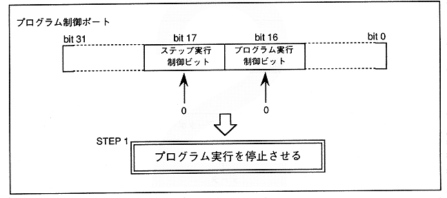

(1) Set bit16 and bit17 of the program control port to 0. (2) Write the access start address to the data RAM address port. ∙ It cannot be set unless the DSP is stopped. (3) Data is sequentially accessed in longword units via the data RAM data port. Access.
Figure 2.18 DSP data access step1
